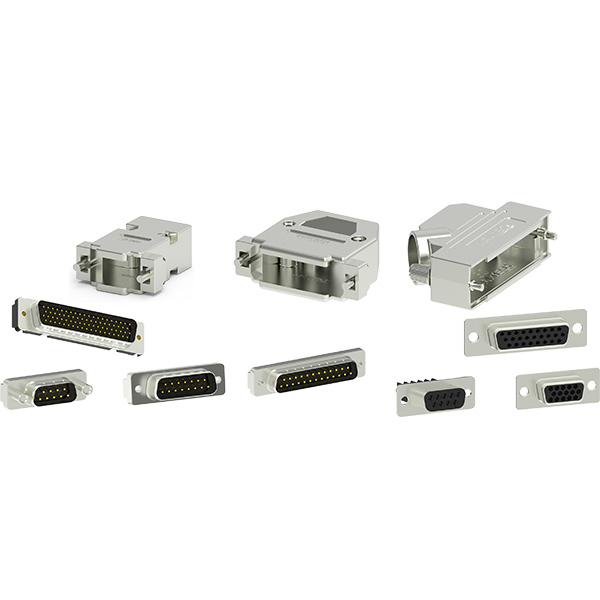

如何选择适合自己的工业连接器？
2019-10-24
近年来，工业自动化程度不断提高，连接器已经不仅仅简单地确保器件间的互通，其功能作用已经扩展至设备间的连接及电流、信号传输的可靠保障，因此，越来越多用户希望连接器可用于各种环境、连接各种设备与系统。
连接器种类繁多，可应用在不同工业自动化领域，如何选择一款合适的工业连接器？！需要连接什么？用在哪里？是首先要考虑的，这决定了所选工业连接器的类型。连接器结构多样化，用途广泛，用户需要先了解自己的需求再做选择。
接下来，先让我们了解一下连接器在现实生活的应用。
在轨道交通方面，例如在动车或高速行驶的列车上，如何能更稳定地通话，更顺畅地浏览网页，或观看高清视频？经常在列车上望着时断时续的信号的你一定知道这有多重要，而连接器就是负责信号的稳定传输，让你能够享受更流畅的WiFi。

在发电站，特别是在户外的开关设备中，工业连接器就发挥了其独有的性能。经常暴露在太阳照射、风、灰尘、雨和冰的环境中，为控制柜提供安全的连接。在风能方面，例如风机的变浆系统上，可靠、久经考验的连接器特别受欢迎。